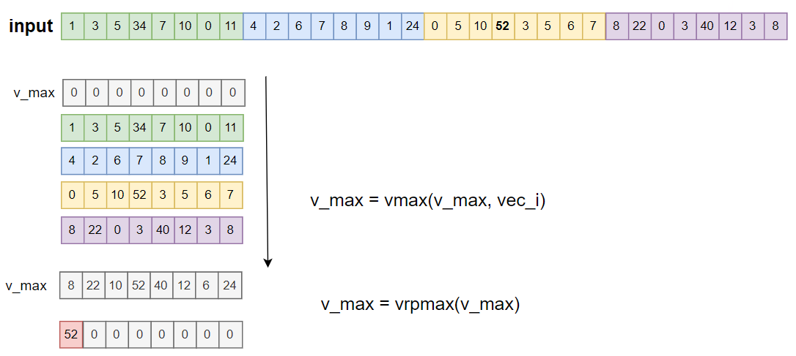
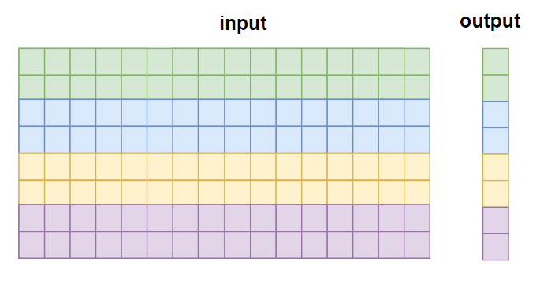

Tutorial 3: Reduce Operator
In this tutorial, you will write a simple reduction operator using Compass DSL. You will learn about:
The basic builtin of max, vrpmax
How to write a max-reduction operator with 1D data
How to write a max-reduction operator with 2D data (alone row axis)
Basic Built-in
Before we write the reduction operator, let’s look at some basic built-in about the max operator.
max: compute the elementwise maximum of two vectors
x: 1 2 3 4 5 6 7 8
y: 5 5 5 5 5 5 5 5
out = S.max(x, y)
out: 5 5 5 5 5 6 7 8
vrpmax: compute the reduction maximum value of the vector
x: 10 20 3 4 5 6 7 8
out = S.vrpmax(x)
out: 20 0 0 0 0 0 0 0
For addtional information, you can refer to vadd, vrpadd.
Writing a Max Reduction Operator with 1-Dimensional Data
We want to write a reduction operation to find the maximum element in a 1-Dimension array.
First, we need to consider the basic logic of how a reduction operates. Here is a conceptual pseudocode for a 1D max reduction:
def max_reduction_1d(input):
max_val = input[0]
for value in input:
max_val = maximum(max_val, value)
return max_val
If we want to implement this with vector built-in, we can use max and vrpmax. The basic idea is:
Convert the loop_n into n//VEC_LEN, for each loop, perform the vector maximum operation using
max.Use
vrpmaxto compute the reductional maximum value of the vector computed by the previous step.

Here is the kernel code:
dtype = "uint32"
n = 8 * 4
@S.prim_func
def max_reduction_1d(a: S.ptr(dtype, "global"), b: S.ptr(dtype, "global")):
v_max = S.uint32x8(0) # for uint, init v_max with 0
for vi in range(n // 8):
va = S.vload(a + vi * 8)
v_max = S.max(v_max, va)
v_max = S.vrpmax(v_max)
b[0] = v_max[0]
Writing a Max Reduction Operator with 2-Dimensional Data (Alone Row Axis)
In this section, we want to compute the maximum along the rows of a 2D array:
input: [batch, n]
output: [batch]
Here is a conceptual pseudocode for a 2D max reduction along rows:
def max_reduction_2d(input):
result = []
for row in input:
max_val = row[0]
for value in row:
max_val = maximum(max_val, value)
result.append(max_val)
return result
In this case, we can split the batch dimensions into NUM_TEC parts, and for each TEC, reuse the 1-Dimension logic. 
Here is the kernel code:
batch = 8
NUM_TEC = 4
each_tec_batch = batch // NUM_TEC
@S.prim_func
def max_reduction_2d(a: S.ptr(dtype, "global"), b: S.ptr(dtype, "global")):
# a [batch,n]
# b [batch]
for ti in S.tec_range(0, NUM_TEC):
for loop_t in range(each_tec_batch):
off_batch = ti * each_tec_batch + loop_t
# 1d-max reduction
v_max = S.uint32x8(0)
for vi in range(n // 8):
va = S.vload(a + off_batch * n + vi * 8)
v_max = S.max(v_max, va)
v_max = S.vrpmax(v_max)
# store output
b[off_batch] = v_max[0]
Complete Code
You can find the sample code in PYTHON_PACKAGE_PATH/tvm/aipu/samples/dsl/tutorial_3_reduce_op.py.
The placeholder PYTHON_PACKAGE_PATH represents the location where you install the Compass DSL
Python package, in general, it will be something like ~/.local/lib/python3.8/site-packages.